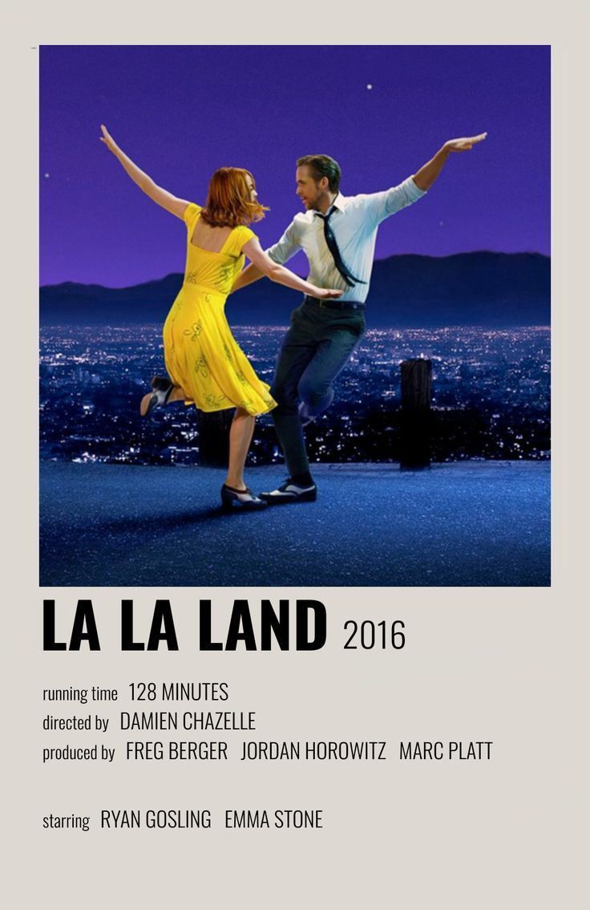
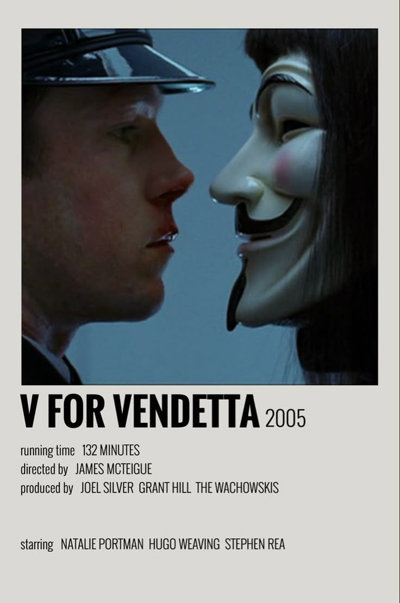
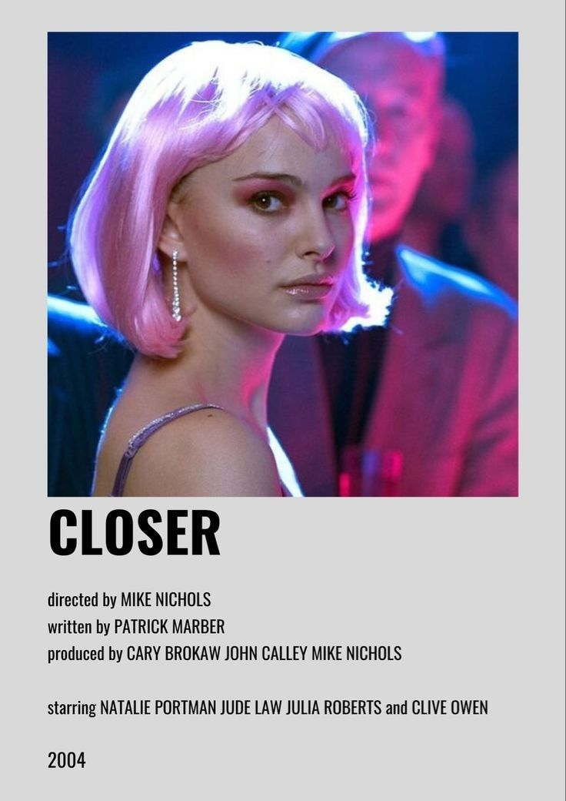
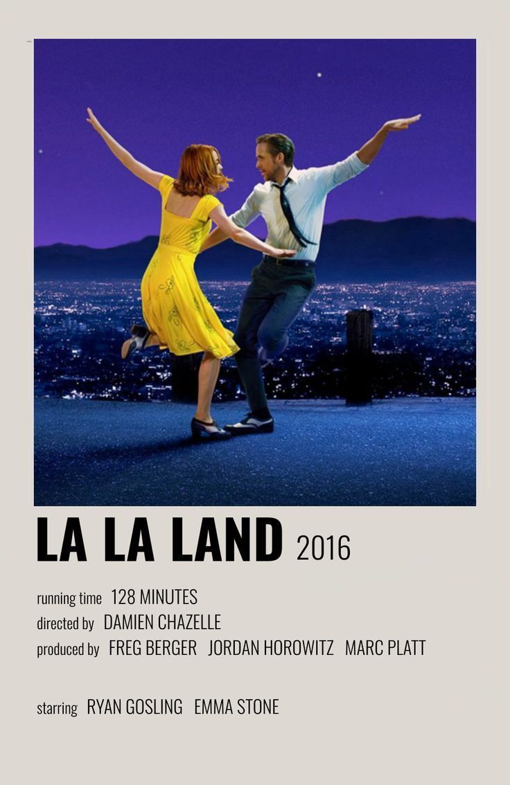
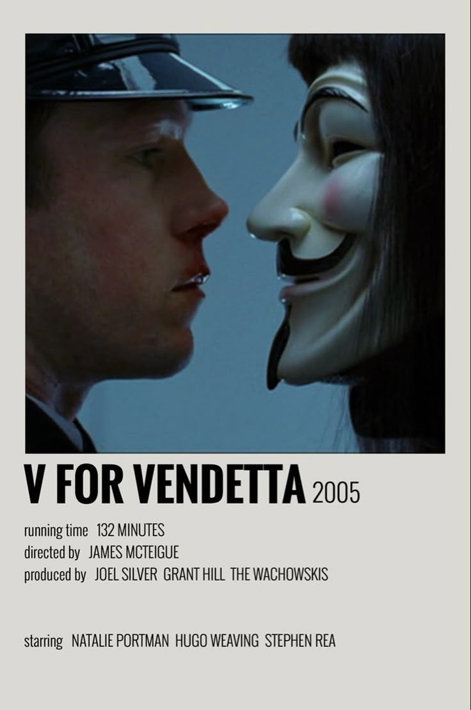
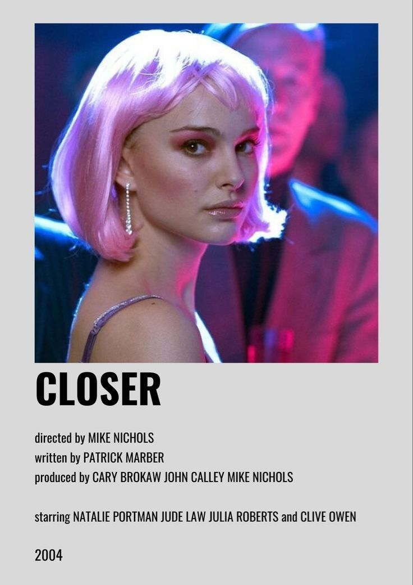

Género Romance
Mi película favorita en este género es "10 cosas que odio de ti"

Basada en "La fierecilla domada" de William Shakespeare
Director: Gil Junger
Producción: Andrew Lazar
Guión: Karen McCullah y Kirsten Smith
Año: 1999
Estreno: 31 Marzo 1999
Distribución: Buena Vista Pictures
Una de mis películas favoritas es "10 cosas que odio de ti" protagonizada por Julia Stiles y Heath Ledger. Me recuerda a mi adolescencia: la moda, trama y música.
La icónica escena de Patrick (Heath Ledger) cantando y bailando con "Can't take my eyes off you" es inolvidable.
La historia está basada en la obra de Shakespeare "La fierecilla domada".
Trama: Kat es una chica rebelde y feminista que no encaja en la preparatoria...

Kat y Bianca son hermanas con personalidades opuestas. Bianca es abierta y encantadora; Kat, inteligente y segura pero antipática.
El padre impone que Bianca no puede tener novio hasta que Kat tenga uno.